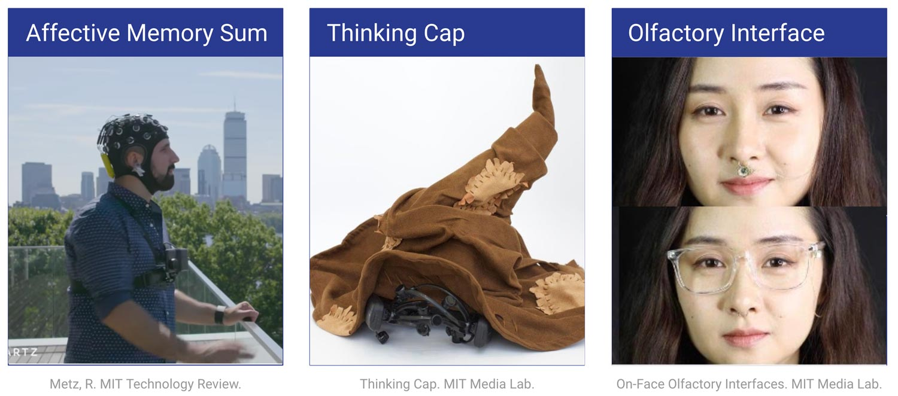
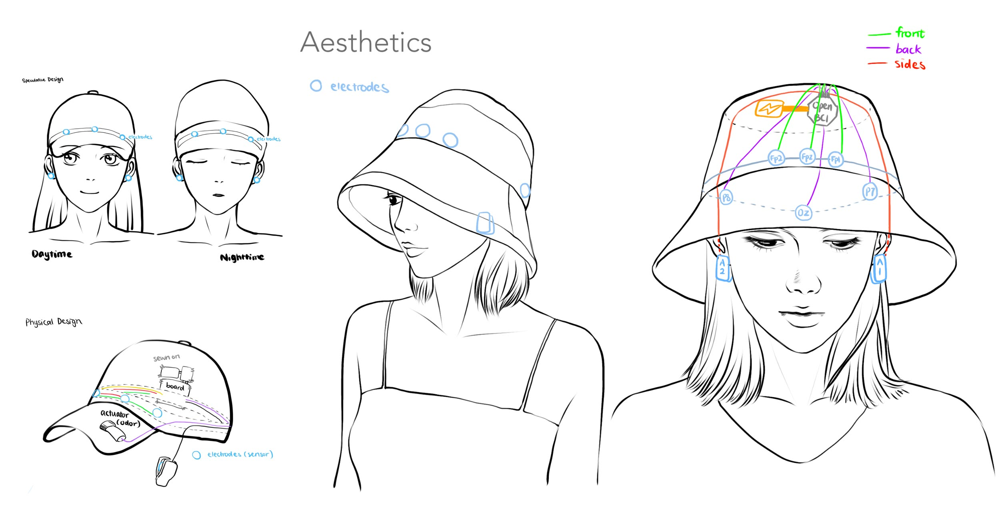
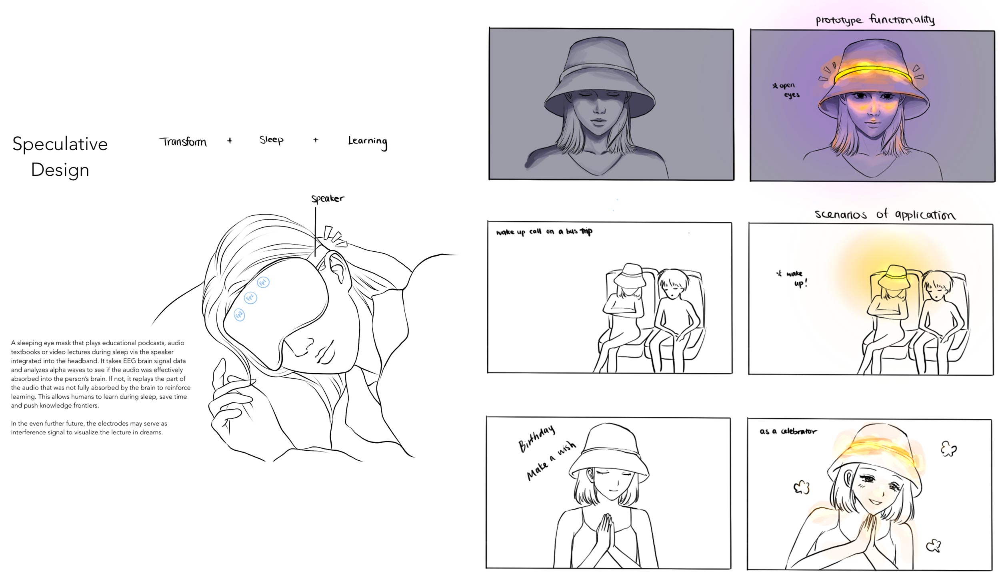
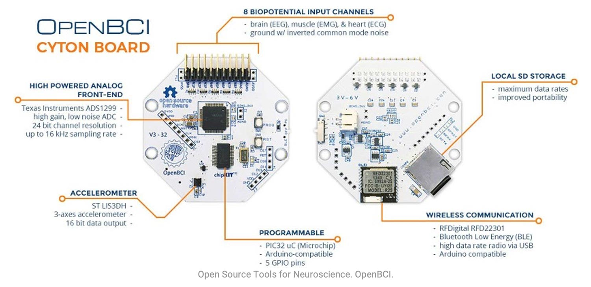
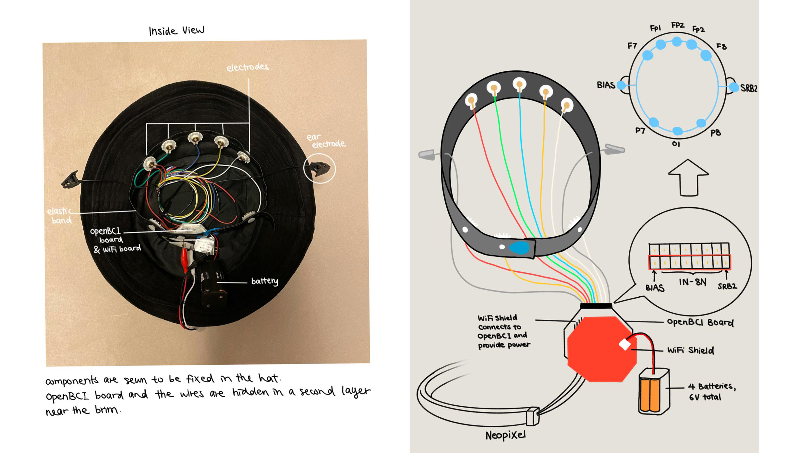
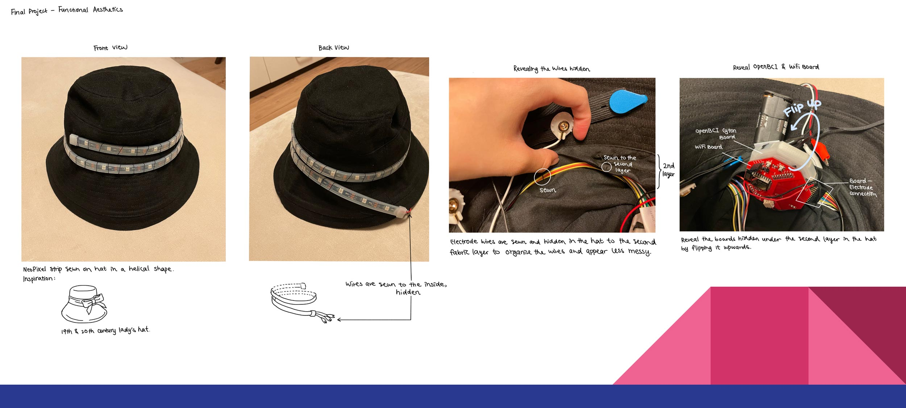
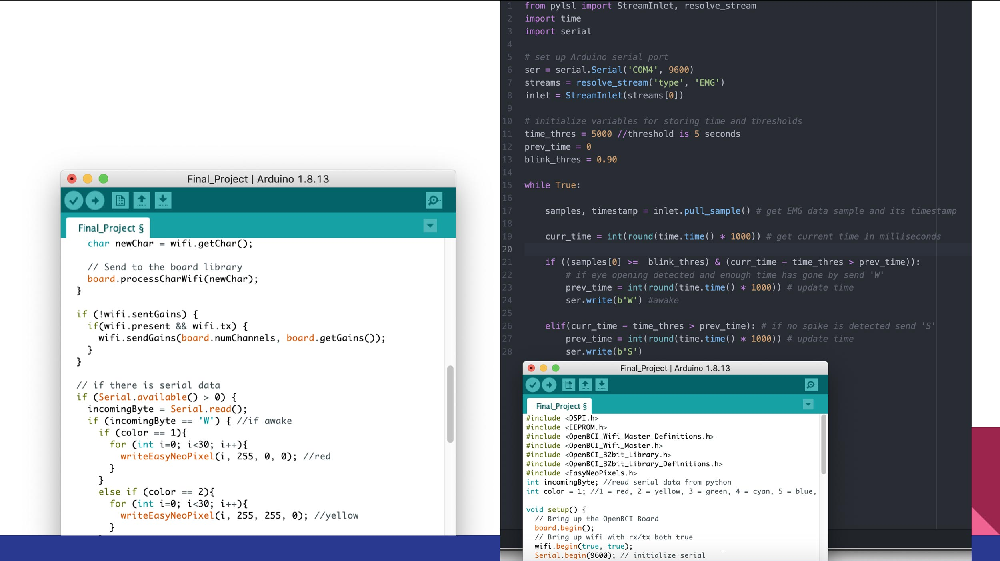
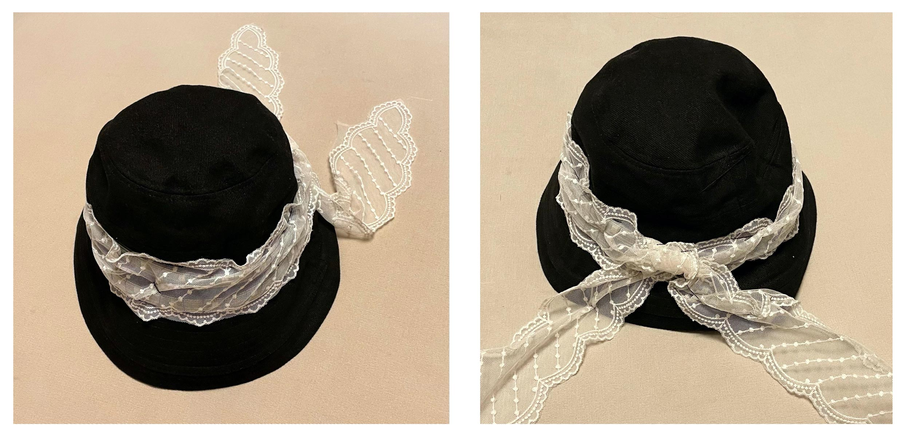
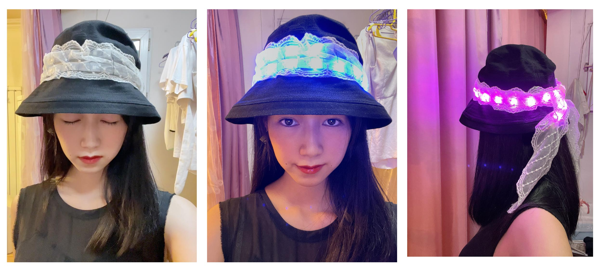

Motivation
Oversleep Problems
Nowadays, many people experience oversleeping problems. I personally sleep for almost twice the time compared to my peers. Furthermore, in daily life, we are interested in knowing more about ourselves and understanding our brain activity fluctuations.
As a psychology and design double major, minoring in computer science, my motivation is to develop a brain activity wearable that can demonstrate a person’s wakefulness with diffused neopixel light. To process the brain activity data, I will use an OpenBCI board that has a WiFi Shield to transmit data. At the same time, the wearable’s design should be aesthetic and convenient for daily wear (such as a design that looks like a hat for outdoor usage) to prompt more users to incorporate BCI devices into their daily use and monitor brain data more casually.
Uniqueness
Brain Activity Wearable with Everyday Life Design
The idea of affective computing/design is not new; however the sensors have not been designed in a way that can be worn in everyday life. The aesthetics of EEG cap has mostly stopped at the looks of a medical device level, compared to other wearable sensors such as heart rate monitor watches that are much more integrated into daily use. There are plenty of cool projects that use EEG sensors to gather insight on sleep patterns, emotions, memories and more, but the design of the sensor prevented it from being widely accepted by non-academic users.
Inspiration & Related Works
Affective Memory
Camera + Biosensing watch + mobile EEG headset.
Software combines the videos and biometric signals, creating minutes-long films that slow down and speed up in accordance with biosignals that correspond with the noteworthiness of events in life.
Thinking Cap
A wearable “Sorting Hat” from Harry Potter equipped with EEG and bluetooth speaker. Measures the self esteem of children before and after the Hat’s praise on their effort and ability, and determines if there are changes in self-perception. Positively influence children’s motivation and academic achievements.
Olfactory Interface
A close-to-nose interface used as a complementary wearable to nasal cannulas or masks, used in medicine to deliver drugs to the body. The user can activate the piezoelectric scent release via a custom-made smartphone app that connects to the prototype.
Design Evolution
 Hardware
OpenBCI
OPENBCI is an open-source brain computer interface tool for neuroscience and biosensing. Part of their mission is to democratize access to neurotechnology, the OpenBCI team launched and supported a number of accessible, open-source products. Their efforts have led to the development of a strong community of users around the world who are pushing boundaries in a number of fields. The founder of OPENBCI is also a research affiliate at the MIT Media Lab, and have donated to a number of projects at the MIT Fluid Interfaces group.
Circuit Design
The electrode locations are based on OpenBCI's recommendation on EEG electrode placements.
Physical Design
Arduino Code
Final Aesthetics
Functional Aesthetics
Demo
Possible Improvements
Computational Power
Due to the complexity of EEG brain activity data, my program and its computational power sometimes does not successfully reduce the noise in order to consistently and accurately analyze brain activity data in a scientifically accurate way, meaning removing confounds. For example, a lot of similar projects by professionals utilize machine learning to train the prototype to be more accurate.
Budget Constraints
I only purchased the OpenBCI board supporting 8 electrodes rather than 16, which decreases its noise reduction power and loses some accuracy of brain activity measurement. Moreover, wet electrodes require EEG conductive paste, which are not as convenient as the more expensive dry electrodes for casual wear.
Physical Constraints
Battery and boards are heavy and large, difficult to hide in a hat without being heavy and bulky. Not lightweight enough to be comfortably worn for a longer period of time.
Check out the next project